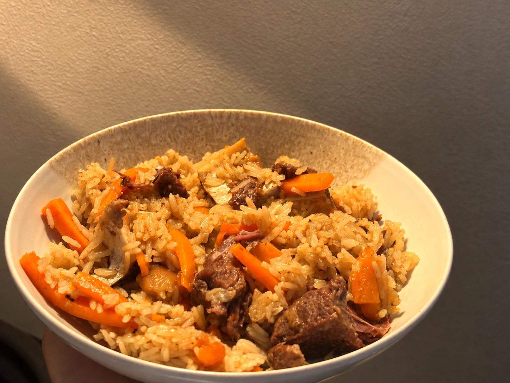
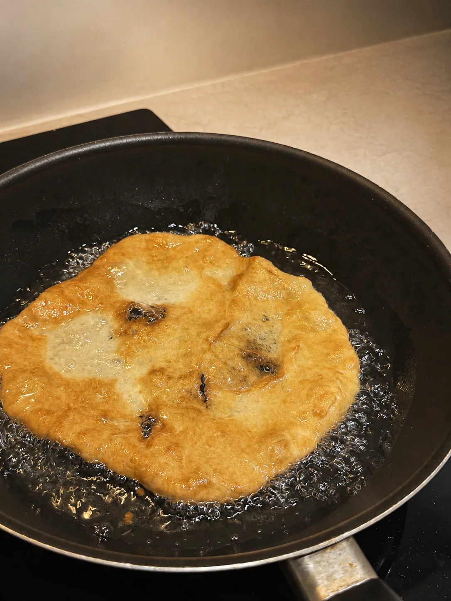
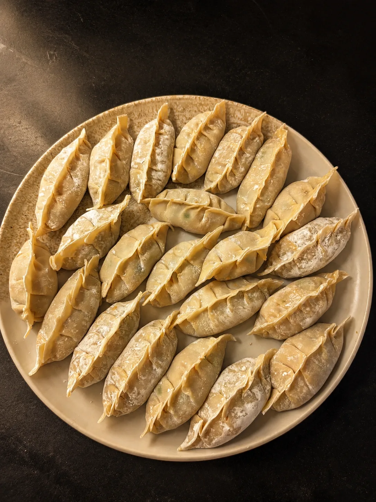

Turkey · Middle East
Turkish eggs
30 mintotal
25 minactive
440kcal
Each direction renders the same modules with real content: nav, home hero, browse, a recipe page (servings and units work), pantry, and the journal. Nothing is removed. Only the look and the hierarchy change. Pick one to carry across the site, or name the parts you want to borrow from another.
| Feature | A · Glazed | B · Folio | C · Atlas |
|---|---|---|---|
| Home: hero, This week, ways in, halal promise | Cobalt hero with arch, recipe grid, pantry and journal panels | Plate hero, featured shelf, index | Map hero with featured card, grid, panels |
| Atlas (region drill-down, search, choropleth, cooked hatch) | Nav tab. Map restyled to cobalt and glaze in the build | Nav tab. Map in ink line on paper in the build | Promoted to the home hero. Recipe countries in brass, cooked countries hatched |
Recipes grid, FilterPanel, search, collections, ?country= | Chips, search, arch cards | Index by country, collection, or time, with search | Region chips with counts, search, cards |
| Recipe page and modal: servings stepper, metric/imperial, timers, cook mode, save, I cooked this, gallery, nutrition | All three show stepper, units, inline timers, Start cooking, Save, and I cooked this. Gallery and nutrition keep their current placement logic. | ||
| Pantry (ink art, prophetic citations, cook from what I have) | Arched pantry cards | Plate grid, ink art multiplied onto paper | Chart-paper chips on sea |
| Journal (masthead, log, rank, stamps, where next), no empty slots | Brass-framed stamp tiles and a two-meter rank | A dated log of cooked dishes | A stamp sheet with rotated stamps, two meters, and one where-next line |
| Favorites, theme toggle, Turnstile, anonymous session | Heart and theme icons stay in every nav. Auth has no visual change. | ||
| Night theme | Hero and journal colours become the night palette | Needs a new warm-graphite night | Already dark. The recipe surface stays chart paper |
A · Glazed. The Courtyard grown up. Same cobalt, cream, and brass, but lighter and more precise. The chunky triple-ring arch becomes one brass hairline, the tile pattern becomes a zellige star kept faint, and Newsreader Light replaces Fraunces for a quieter, more expensive serif. This one moves the least from what you have now, so it is the safest choice.
Every recipe is halal
Dishes I've eaten on the road and learned to make in my own kitchen. Pick a place, pick a dish, and start cooking tonight.

A Nieves's Kitchen take on Turkish çılbır
The ingredients I cook with most, what each one does, and which recipes use it.
Three countries cooked so far. Each one leaves a stamp.
B · Folio. A printed cookbook on screen. Photographs are numbered plates with captions, Libre Caslon does all the typography, the recipe page is a two-page spread with the method's notes in the margin, and browsing is a real cookbook index. The cobalt becomes an ink blue-black, with saffron and pomegranate used in small amounts. This one looks the most expensive and relies most on good photography.
A notebook of recipes from places I've eaten and cooks I've learned from, each one tested at home and always halal.
“Small pieces, one at a time, eaten standing up in the kitchen before anyone thinks to sit down.” From the lángos.

A long braise for the weekend and two quick ones for the evenings in between.
The one-pot cousin of Uzbek plov. Whole cumin, white pepper, and a braise that cooks the rice.
Every recipe in the kitchen. Filters and search work the same way they do now.
A Nieves's Kitchen take on Turkish çılbır
Cold yogurt under hot eggs is the one thing to avoid here, so take it out of the fridge before you do anything else.
What you've cooked, in the order you cooked it.
Where next? The lángos would take you to Slovakia.
C · Atlas. Built around the travel side of the brand. The world map moves onto the home page as the hero: countries with recipes are lit in brass and the ones you have cooked are hatched. Marcellus gives the lettering an engraved feel, like a printed chart, and the stamps become the signature. Recipes open onto light chart paper, so the page is easy to read while you cook. This one changes the most and gives the site the strongest identity.
Halal recipes from six countries so far, each one tested at home. Choose a lit country to see what's cooking there.

Filters, search, and collections work as they do now, restyled for the chart.
What each ingredient does, and where it turns up in the recipes.
Six dishes cooked from four countries in three regions.
Where next? Slovakia is one lángos away.
D · Glazed Folio. A and B combined. A's colours, hero, browse, pantry, and journal, with the yellow gone: buttons are cream on cobalt and terracotta is the only accent. The recipe page is B's two-page spread in A's type and colours. Photos use C's 3:2 landscape crop in a three-column grid. Hero photo:
Every recipe is halal
Dishes I've eaten on the road and learned to make in my own kitchen. Pick a place, pick a dish, and start cooking tonight.
Turkey, Middle East
A Nieves's Kitchen take on Turkish çılbır
Cold yogurt under hot eggs is the one thing to avoid here, so take it out of the fridge before you do anything else.
The ingredients I cook with most, what each one does, and which recipes use it.
Three countries cooked so far. Each one leaves a stamp.